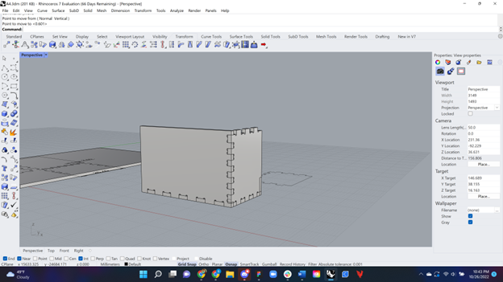
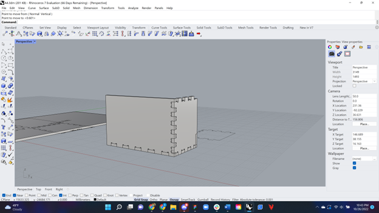

Belinda Bleeker's Assignment 4!

For this project my first step was using Rhino to help me understand dogbones. I would create a line and try to imitate dogbones until I got extrusions that fit together. I made them as deep as the material thickness about 1.4mm with an added half circle from a .8mm diamater circle at the ends. Initially I made as many dogbones as I could to use as connectors but it was visually unappealing to me put together so I scrapped that idea.
 

The final model I used ultized 3 dogbones in the center of each connecting piece (more like the example). I also made it so it didn't have a top, instead a straight edge.
Lastly I took this design as my inspiration for the engraving. I tried making curves on Adobe Illustrator but ended up tracing pieces off of the image once I imported it to Rhino.
I separated the pieces into two slabs for the material we were given. One had 3 sides and the other 1 side and the bottom. I exported them as .Dxf files (separate engraving and cutting) and imported them separately into KiCad. Once I plotted them in KiCad I followed Junchao's example and put them in the Bantam program. Unfortunately my first attempt had some issues because the N Mill didn't spin the bit it ended up breaking, and I didn't realize the problem until I sent a video on Discord and Danli noticed that.

I went back the next day where Junchao, Vanessa, Katrina, and Annie were able to help me out. The machine was still acting up, and aparently another had as well. Either way I finally was able to cut out my parts! Even if I had to run each program twice for the Mill to actually finish doing it. I spent over an hour on pieces that total should've taken under 20 minutes. When the Mill stopped I had to turn off the machine, restart it, re-install the tool and then run the program again. But, they got finished and that's what needed to happen.

The pieces wouldn't initially fit because I had made the connectors the same size in Rhino. I used a precision file to make the protruding parts smaller until they fit. Once the fit was secure, I was able to connect them, however, the bottom piece wouldn't stay without tape, and Junchao said we didn't need a bottom so I left it at that.
Here is the final connected piece.
Documentation:
KiCad File Side Engraving KiCad File Side Cut KiCad File Bottom Engraving KiCad File Bottom Cut
Acknowledgements
Junchao for helping me work the mills, and made time to come see me because I couldn't make office hours. Seriously thank you so much!
Vanessa, Katrina, and Annie who helped me out with the mills!
And my friend Dana for helping me put this site together
Return to index